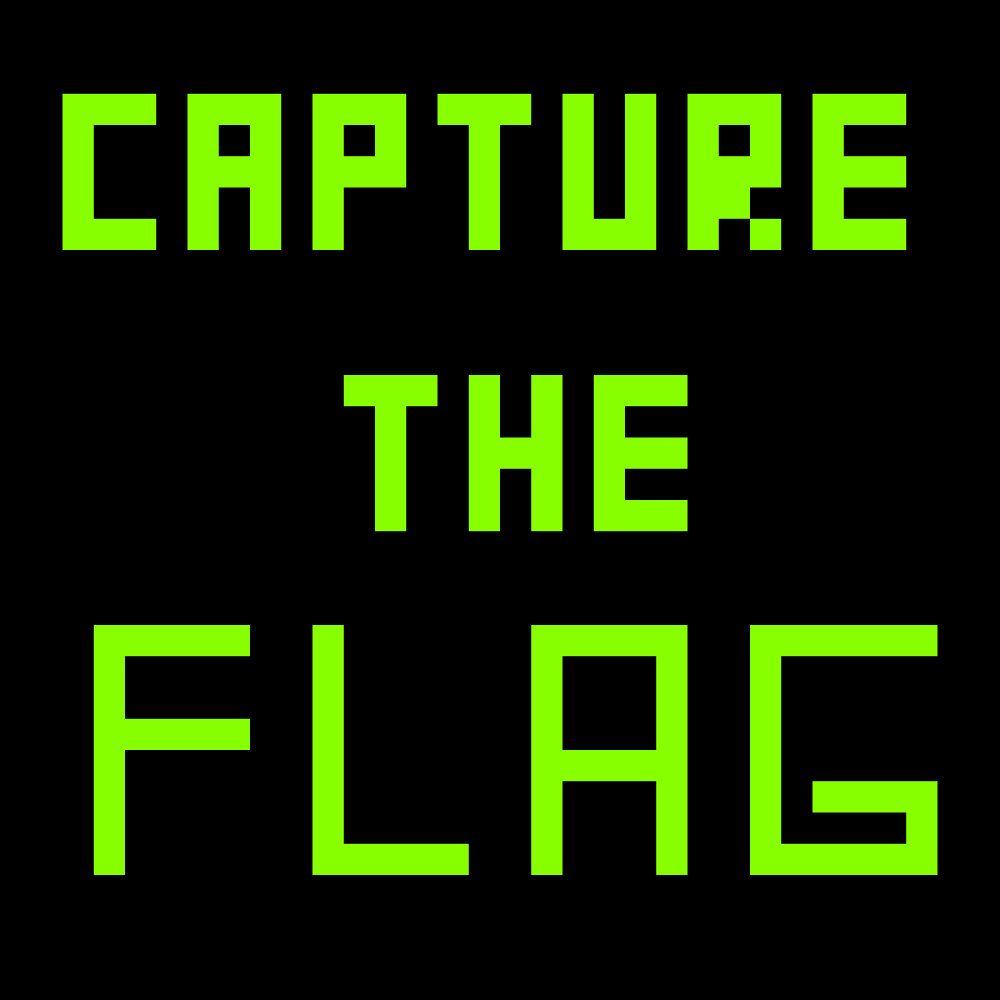

Welcome to Mark Bosco's
FLAG THE CAPTURE
game.
Can you solve this?
Start Audio
HINTS
1. All information can be retrieved by listening to the audio.
No hex editors, binary extractions or hidden files.
2. The message and the key are retrieved using different methods.
3. No morse code.